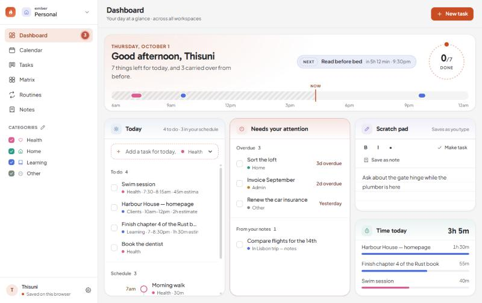
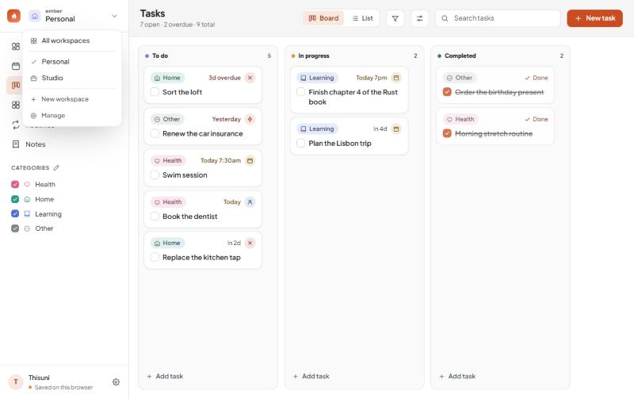
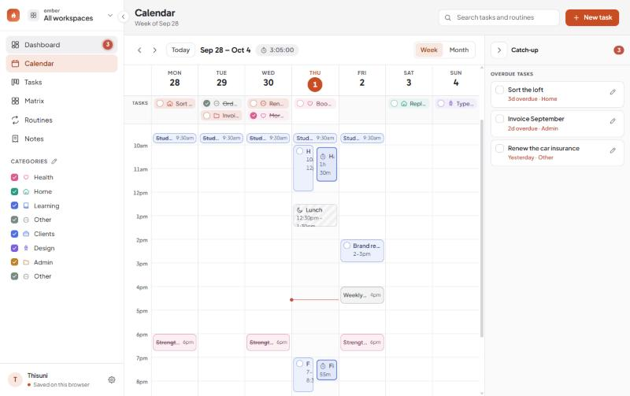
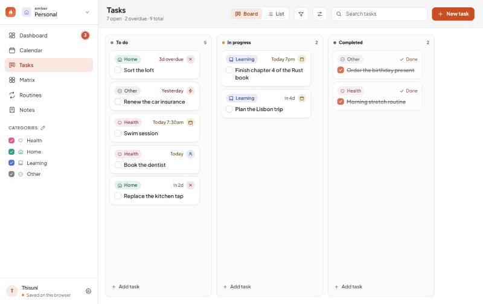
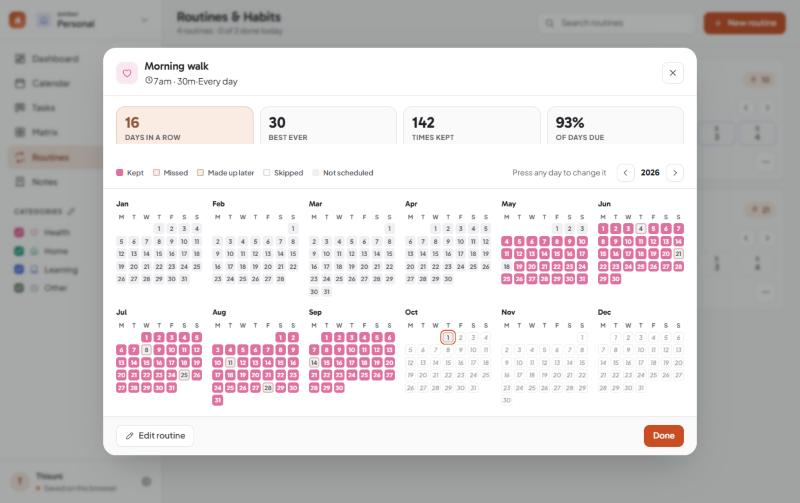
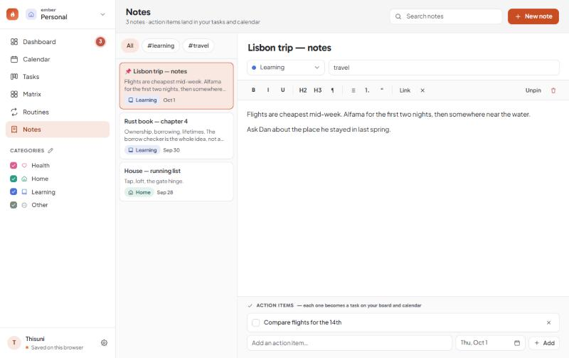
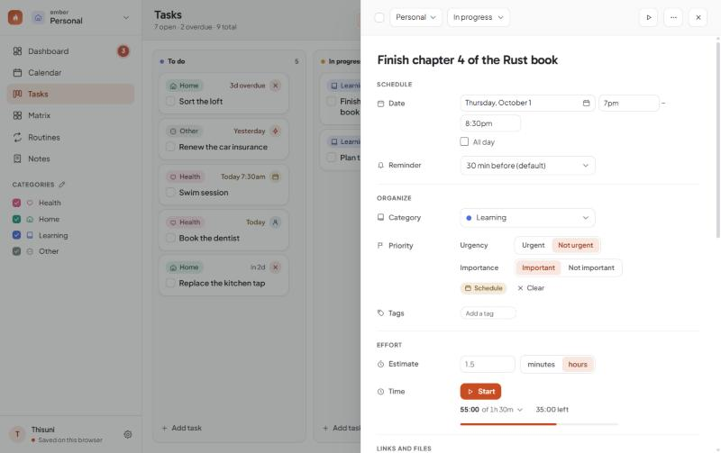
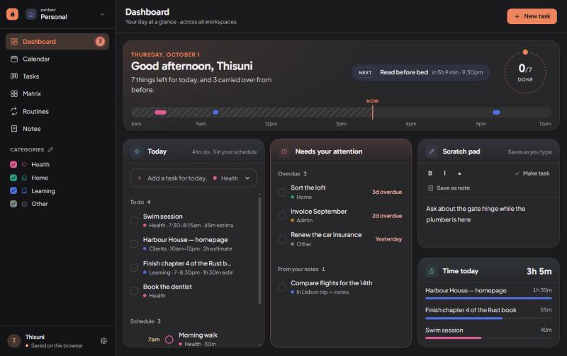

Free · Windows, macOS and Linux
Ember gives each part of your life its own workspace — its own tasks, routines, notes and categories — and still shows you one honest picture of today. Everything stays on your computer.
No account. No subscription. Nothing leaves your machine.

Up to six workspaces. Studio has its own lanes and its own categories; Personal never sees them. Switch and the whole sidebar changes with you.
The dashboard is the one page that ignores the divide: what is due, what is late, what repeats — across every workspace, on one screen.
No account to make, no server to trust, no subscription to cancel. The planner is a file on your own disk, and you can back it up wherever you like.
Workspaces
Most planners give you one list and ask you to tag your way out of it. Ember gives you separate planners that happen to share a window.
Switch
Categories, tasks, routines, notes, documents, tracked time and board lanes all belong to the workspace they were made in. Studio can run Inbox → In progress → Review → Shipped while Personal keeps three plain columns, and neither knows about the other.

Today
Whichever workspace you are in, the dashboard shows all of them — because today does not belong to one part of your life. Three columns that each scroll on their own, so a packed schedule can never push what is overdue off the bottom of the page.
Six ways to look
Write a task once. It shows up on the board, on the calendar, in the matrix and in today’s list — because it is the same task, not four copies of it.
Calendar
Routines, timed tasks, unavailable time and the hours you actually tracked, laid side by side. Here it is showing every workspace at once. Drag down an empty stretch to make something there; drag a block to another day or hour to move it.

Board and list
The board is yours to shape: add lanes, rename them, pick which one means done. The same tasks as a list group by workspace, date, lane, category, priority or a field you invented — and every cell is edited where it sits.

Routines
Anything that repeats — daily, weekdays, chosen days or every few days. Check off a square to keep the run going. Any day counts, doing it on a day off makes up for a missed one, and a week off can be let off rather than ending the streak.

Notes
Write freely, tag by category, and turn any line into an action item. It becomes a real task on the board and the calendar — not a checkbox buried in a document you will never reopen.

A task, opened
A panel slides in from the side — no full-screen detour. Its workspace and its lane at the top, then dates, priority, tags, linked tasks, files, subtasks, an estimate and a timer — with every change the task has been through a click away.

What is in it
Today across every workspace: what is due, what repeats, what is late, your notes’ action items and a scratch pad.
Week and month. Drag to create, drag to move, and a Catch-up panel that gathers anything overdue.
A board with lanes you named, or the same tasks as an editable table you can group and sort how you like.
Every task falls into an Eisenhower quadrant from whether it is urgent, important, both or neither.
Habits with streaks that have no ceiling, a full-year log, and days you are allowed to let off.
Write, tag, and turn lines into real tasks. Longer pieces become Markdown documents.
However you like it
Every grey and every tint is measured against the text that sits on it, so nothing is faded below the point where it can be read.

Why it exists
I kept two planners. One for client work, one for everything else. Neither of them could tell me what my actual Tuesday looked like, and the one that tried turned my weekend into a column of work tickets.
So Ember keeps them properly apart — separate categories, separate lanes, separate everything — and then puts one honest dashboard over the top. That is the whole idea. The rest is the planner I wanted underneath it: a calendar you can drag, routines that remember more than the last seven days, and nothing that phones home.
It is free, it is open source, and it is still being worked on in the open. If something is missing, the roadmap is public and the issue tracker is open.
Your data
Everything you type is stored by the app on your own machine and never leaves it. Nobody is counting your tasks, and there is nothing to cancel.
Get it
Or take the single file, which needs no install at all.
A .dmg you drag into Applications. Apple Silicon and Intel builds are both attached.
Download the .dmgA single HTML file that runs in any browser by double-clicking it. Nothing to install, nothing to remove.
Download ember.htmlxattr -cr /Applications/Ember.app in Terminal once before it will open. If you would rather
not do any of that, the single HTML file skips it entirely.
Questions
Yes. No trial, no tiers, no card. It is open source on GitHub and you can read every line of it, including the part that saves your data.
On your own machine, in the app’s own storage. It is not sent anywhere, because there is nowhere for it to be sent — there is no Ember server.
That makes backups your job rather than ours. Settings › Your data writes a copy into a folder you choose and can do it on a schedule.
Not in these builds. Two-way Google Calendar sync and Google Drive backup are written and working, but they need a Google application key that the public downloads do not ship with, so both are switched off in the version you get here. If you build Ember yourself you can supply your own key and turn them on.
Not properly yet. The layout folds down to a narrow screen, so the single HTML file will open on a phone browser, but there is no app and no sync between devices — so what you add on the phone stays on the phone. A proper answer to this is on the roadmap.
Three things need a real application rather than a browser tab: the floating timer that stays above other windows, the Obsidian vault sync that reads and writes files on your disk, and reminders that still arrive when the window is closed.
Six. Enough to keep the parts of a life apart, few enough that the switcher stays a list you read rather than one you search.
Yes — back it up to a file on one machine and restore it on the other. Everything comes across except the things that belong to the computer it left: the Obsidian vault path, the backup folder and a timer that was running.
Download it, put your real week in it, and see whether tomorrow morning is easier to look at. If it is not, delete it — nothing of yours went anywhere.
Free and open source · Windows, macOS and Linux